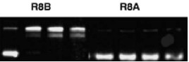

Titanium dioxide (TiO2) is the most common inorganic filler in sunscreen formulations. It is also one of the most common components of the Earth’s crust, its two most common crystalline forms being anatase and rutile (1). It is relatively nontoxic under normal conditions, but exposure to UV light can result in the formation of reactive oxygen species such as superoxide, hydroxyl radicals and singlet oxygen (2). Further, TiO2 is known to transfect into living skin cells and thus warrants serious investigation into its phototoxic effects (3). (Figure 1).

Figure 1. TiO2 Powder (4).
Sunscreens use TiO2 particles around 20-50 nm in size to scatter light at wavelengths below 400 nm in the UV region of the spectrum, but it does not scatter light at visible wavelengths and appears clear to the eye. Additionally, the light which is not reflected from the particles by Rayleigh scattering is efficiently absorbed (3). When exposed to UV radiation, TiO2 becomes an efficient semiconductor with a band gap of only 3.23 and 3.06 eV for its anatase and rutile crystalline forms respectively. The excited electrons and holes from the valence and conduction bands migrate to the surface where they readily react with any adsorbed species (5). The electrons react with molecular oxygen to form superoxide anions, while the holes react with hydroxide anions to form hydroxyl radicals. Both are capable of inducing DNA damage and general oxidative stress (6). (Figure 2).
TiO2 + hv → TiO2 (e- / h+)
e- + O2 → O2-· → HO2·
h+ + OH- → ·OH
DNA + ·OH + O2 → DNA-OH + O2-·
Figure 2. Reactive Species Produced in Aqueous Environments and an Example of Subsequent Reaction with DNA.
The first biological studies examining the UV excitation of TiO2 nanoparticles were done in 1997. The ability of these particles to produce oxidizers capable of damaging DNA is dramatic, showing damage to DNA both in vitro and in human fibroblast cells. Only a handful of studies have been done since and have focused on confirming the photochemical pathways involved and examining the modification of TiO2 nanoparticles to more photochemically inert forms (3,5)
Various sunscreen formulations use surface-modified TiO2 particles with coatings such as silicon oxides, silicones, organosilanes, aluminum oxide, and manganese dopants. All of these formulations actually seem to show an increase in cell apoptosis when irradiated with UV light compared to plain TiO2 except for the aluminum oxide-modified surfaces (2). Thus it is clear that many of the formulations on the market are exacerbating an already existing tendency for oxidative damage to occur. One encouraging study shows successful surface modification of TiO2 to very inert forms using thermally assisted chemical modification. Figure 3 shows results from this study. The relative amounts of damaged and undamaged DNA in modified and unmodified particles can be judged from the relative intensities of the gel electrophoresis bands. Damaged DNA is represented by the upper band, while intact DNA is the lower band. Irradiation times were 0, 10, 20 and 30 minutes respectively for each trial (7).

Figure 3. Gel Electrophoresis of DNA after UV Exposure to Unmodified (R8B) and Modified (R8A) TiO2 Particles
It is clear that TiO2, though nontoxic under most conditions, can become extremely reactive under UV excitation in aqueous environments. This provides us with a powerful lesson that care must be taken to consider a material’s application before making a judgment as to its safety. Future studies will hopefully focus on the extent to which TiO2 can pass through the membrane of living skin cells and work to find better surface modifications to reduce reactivity.
Resources
General introduction to Sunscreens
References
(1) Ceramics Today article on TiO2.
(2) Rampaul, A., Parkin, I. P., Cramer, L. P. Journal of Photochemistry and Photobiology A: Chemistry 191, 138-148 (2007).
(3) Dunford, R., Salinaro, A., Cai, L., Serpone, N., Horikoshi, S., Hidaka, H., Knowland, J. FEBS Letters 418, 87-90 (1997).
(4) Image taken from: http://www.mariopilato.com/titanium-dioxide.ht
(5) Hidaka, H., Horikoshi, S., Serpone, N., Knowland, J. J. of Photochem. and Photobiol. A: Chemistry 111, 205-213 (1997).
(6) Brezova, V., Gabcova, S., Dvoranova, D., Stasko, A. J.l of Photochem. and Photobiol. A: Chemistry 79, 121-134 (2005).
(7) Serpone, N., Salinaro, A., Horikoshi, S., Hidaka, H. J.l of Photochem. and Photobiol. A: Chemistry 179, 200-212 (2006).
Author: Tyler St. Clair
- Alzheimer's 1 2
- Antibiotics
- Antifouling Paint
- Arthritis
- Ayurvedic Medicine
- Breast Feeding
- Cancer Therapy
- Cattle Feed
- Cerebral Ischemia
- Chelation Therapy
- Chernobyl
- Chicken Feed
- Chocolate
- Cigarettes
- Coal 1 2
- Copper Mining
- Cremation
- Diabetes
- Electronic Waste
- Hat Making
- Hard Metal Disease
- Hybrid Cars
- Imaging 1 2 3 4
- Industrial Pollution
- Jewelry Allergy
- Lead Poisoning
- Lewisite
- Magnetic Particles
- Makeup
- Mountain Top Removal
- MRI Imaging
- Neurotoxicity
- Nuclear Power
- Nuclear Weapons
- Ouch Ouch Disease
- Peripheral Neuropathy
- PET Imaging
- Photodynamic Therapy
- Phytoremediation
- Pregnancy
- Radioactivity 1 2
- Seafood
- Sunscreens
- Tattoos
- Vaccines
- Wound Healing